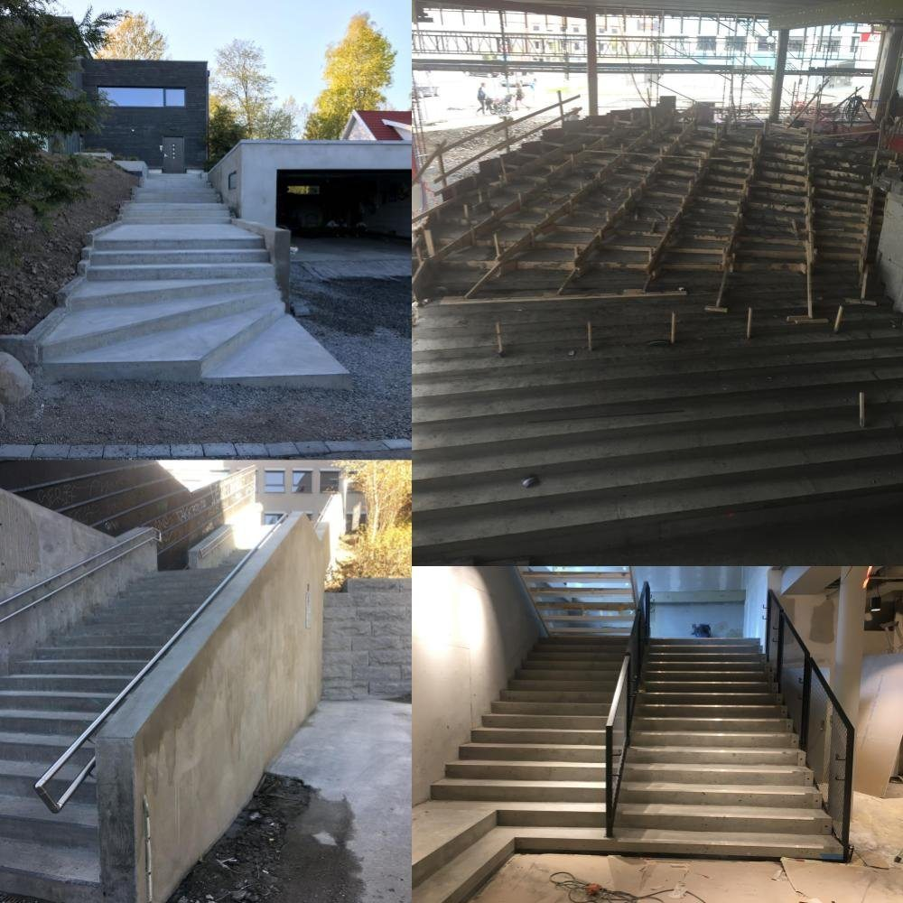
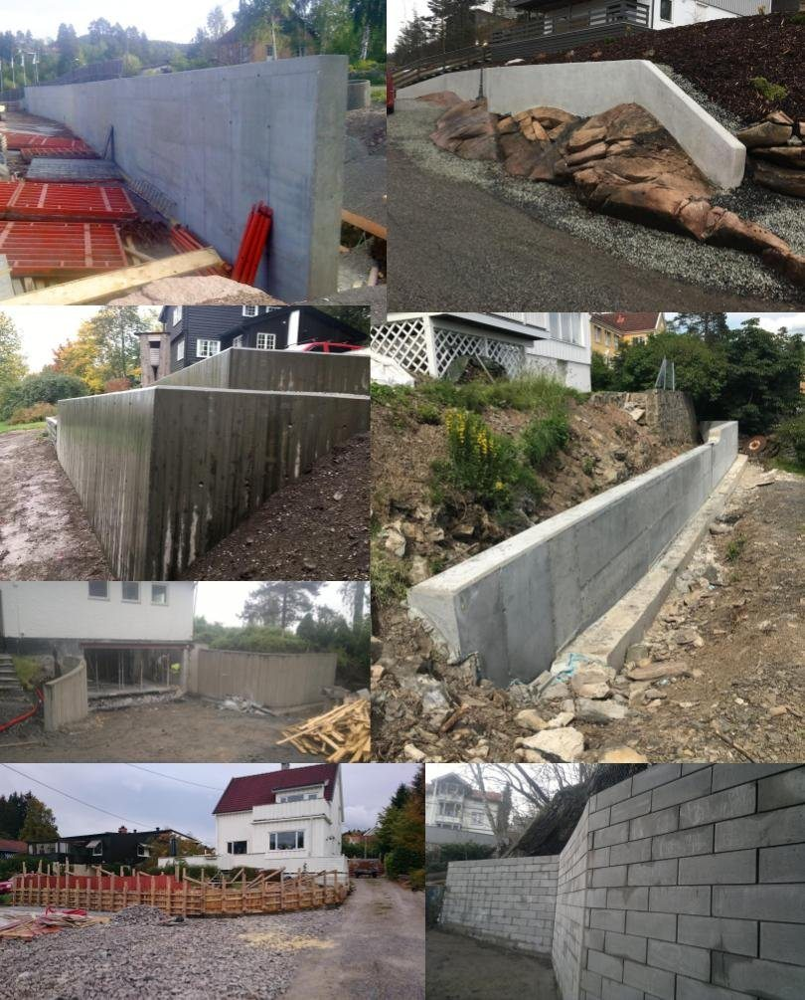
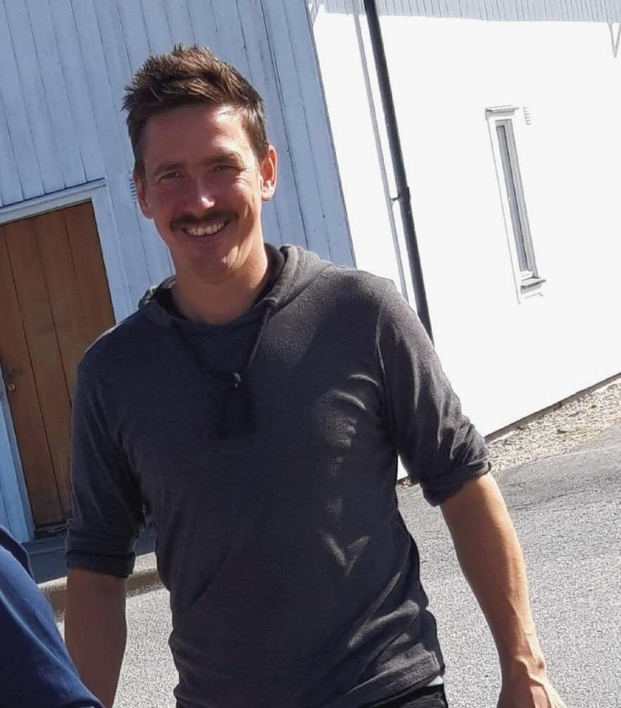

Solid håndverk.
Helt fra grunnen.
Jeg er Tom Langen. Med mer enn 20 år i betongfaget hjelper jeg deg fra den første ideen til et resultat du kan være stolt av.
27 kundeomtaler · Les kundenes erfaringer ↗Et godt grunnlag.
Et gjennomført resultat.
Fra gulvet under føttene til trappen i terrenget. Jeg finner gode faglige og økonomiske løsninger sammen med deg.

Gulvstøp ↗
Betonggulv for bolig, kjeller, garasje og næring. Slipt, brettskurt eller stålglattet.

Trapper & forskaling ↗
Trapper og kjellernedganger tilpasset bygget, terrenget og måten de skal brukes på.

Murer & fundamenter ↗
Støttemurer, grunnmurer, fundamentering og betonggarasjer. Solid arbeid fra grunnen.
Dette sier kundene om Tom
«Bra utført etter tegning. Proffe og punktlige.»
«Helt klart at de ønsker å levere et resultat kunden er fornøyd med.»
«Men veldig kvalitets- og service-innstilt. Jeg er veldig fornøyd med resultatet. :)»
Utdrag fra originale kundeomtaler. Hele vurderingene er tilgjengelige på siden med kundeomtaler.

Hei, jeg er Tom.
Jeg brenner for faget.
Oppvokst i en familie med fagarbeidere fikk jeg tidlig lære verdien av godt håndverk. I dag driver jeg Håndverkeren Langen med kontor og lager på Gressvik i Fredrikstad.
Bruk meg som rådgiver og fagmann fra starten av prosjektet eller gjennom hele byggeprosessen. Det kan lønne seg.
Bli bedre kjent med meg ↗